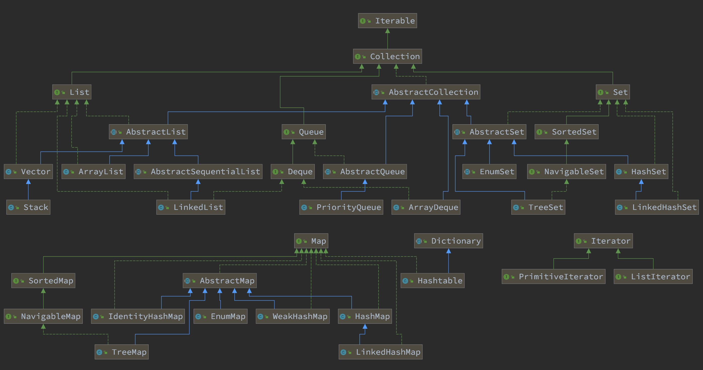

前言：JDK & STL 源码分析计划
为了学好数据结构以及相关算法，同时也为了更好地理解 JDK 的底层实现，计划对 JDK 集合类的源码做一个系统的阅读分析。
欢迎随时提交 PR 或 Issue。或者关注我的微信公众号，给我发消息。
浏览请点击： JDK 源码分析。
| 本文档基于 OpenJDK 17 的代码开展分析，请 PR 的小伙伴使用相同版本的 JDK。谢谢！ |
友情支持
如果您觉得这个笔记对您有所帮助，看在D瓜哥码字的辛苦上，请友情支持一下，D瓜哥感激不尽，😜
|
|


有些打赏的朋友希望可以加个好友，欢迎关注D瓜哥的微信公众号，这样就可以通过公众号的回复直接给我发信息。

公众号的微信号是: jikerizhi。因为众所周知的原因，有时图片加载不出来。如果图片加载不出来可以直接通过搜索微信号来查找我的公众号。
|
官网及版本库
本文档的版本库托管在 Github 上，另外单独发布。
- “地瓜哥”博客网
-
https://www.diguage.com/ 。D瓜哥的个人博客。欢迎光临，不过，内容很杂乱，请见谅。不见谅，你来打我啊，😂😂
- 本文档官网
-
https://diguage.github.io/jdk-source-analysis/ 。为了方便阅读，这里展示了处理好的文档。阅读请点击这个网址。
- 本文档版本库
-
https://github.com/diguage/jdk-source-analysis 。欢迎大家发送 PR。
总体思路
-
学习基本的数据结构认识。兵马未动粮草先行。先把基础理论搞清楚。
-
学Java的，可以从下面两本书中选一本：
-
学 C/C++ 的，可以看下面这套书：
-
-
自己实现一遍基本的数据结构；
-
阅读 JDK 或 STL 源码，做学习笔记。
对比一下自己的实现和这些经典代码的实现，总结自己差距，提高自己的编码能力。 -
STL源码剖析 — 阅读源码时，建议参考一下本书的内容。
-
建议把网上的源码分析笔记都看一看，取长补短，补充自己的分析。
-
建议把网上相关面试题也看一看，检验自己的学习成果。
-
-
相关联的 LeetCode 上的题都刷掉。
|
还有两个想法：
|
JDK 集合类
- Base + Iterator
-
代码总行数： 103 + 135 + 302 + 195 + 838 + 127 + 734 + 480 = 2914 行，预计 5 个小时。
-
java.lang.Iterable -
java.util.Iterator -
java.util.PrimitiveIterator -
java.util.ListIterator -
java.util.Spliterator -
java.util.Enumeration -
java.util.Collection -
java.util.AbstractCollection
-
- List
-
代码总行数： 1063 + 942 + 253 + 1266 + 1509 + 141 + 1759 = 6933 行，预计 12 个小时。
-
java.util.List -
java.util.AbstractList -
java.util.AbstractSequentialList -
java.util.LinkedList -
java.util.Vector -
java.util.Stack -
java.util.ArrayList
-
- Queue
-
代码总行数： 212 + 616 + 192 + 1233 + 987 = 3240 行，预计 6 个小时。
-
java.util.Queue -
java.util.Deque -
java.util.AbstractQueue -
java.util.ArrayDeque -
java.util.PriorityQueue
-
- Set
-
代码总行数： 732 + 186 + 264 + 491 + 323 + 361 + 560 + 195 + 1395 = 4507 行，预计 8 个小时。
-
java.util.Set -
java.util.AbstractSet -
java.util.SortedSet -
java.util.EnumSet -
java.util.NavigableSet -
java.util.HashSet -
java.util.TreeSet -
java.util.LinkedHashSet -
java.util.BitSet
-

- Map
-
代码总行数： 1687 + 284 + 424 + 857 + 3012 + 1339 + 812 + 1600 + 756 + 2444 + 155 + 1521 = 14891 行，预计 28 个小时。
-
java.util.Map -
java.util.SortedMap -
java.util.NavigableMap -
java.util.AbstractMap -
java.util.TreeMap -
java.util.WeakHashMap -
java.util.EnumMap -
java.util.IdentityHashMap -
java.util.LinkedHashMap -
java.util.HashMap -
java.util.Dictionary -
java.util.Hashtable
-

来张总体结构图：

| 这里没有包含并发相关的集合类。这块内容放到并发中一起搞。 |